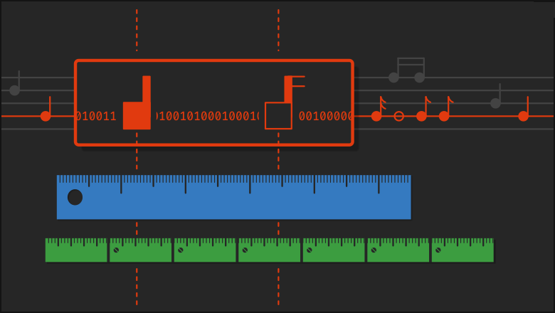

Представьте: вы создаёте новый шедевр в любимой DAW, вставляете в проект MIDI-файл, редактор показывает, что ноты в нём имеют восьмую длительность. Не обращая на это внимания, вы продолжаете творить. Но, постойте. А как DAW, собственно, понимает, что ноты в файле восьмые? В статье попробуем разобраться, как времена в MIDI-файле соотносятся с главным форматом времени при работе с музыкой – тактами и долями. Результатом наших исследований будет законченный алгоритм на C#.
В статье попробуем разобраться, как времена в MIDI-файле соотносятся с главным форматом времени при работе с музыкой – тактами и долями. Результатом наших исследований будет законченный алгоритм на C#.
План повествования будет таким: определимся с терминологией, посмотрим на варианты решения задачи некоторыми DAW, а затем реализуем логику преобразования времени. Если хочется сразу увидеть финальный код, можно перейти к разделу Заключение.
Необходимая теория
Для начала немного сведений о формате MIDI-файлов. Я кратко изложу только то, что нам потребуется далее в статье. Те же из вас, кто хочет скоротать вечер за чтением технических спецификаций, всегда могут обратиться к полному документу на сайте midi.org (для скачивания нужна регистрация). MIDI-файл состоит из блоков, в каждом из которых в хронологическом порядке записана последовательность MIDI-событий (например, взятие ноты или изменение контроллера). Каждое из них снабжено временем относительно предыдущего события – delta-time. Дельты измеряются в тиках (ticks) и представляют собой неотрицательные целые числа. Например, дельта 20 говорит о том, что событие отстоит от предыдущего во времени на 20. Но на 20 чего? Значение этих чисел задаётся структурой в заголовке MIDI-файла, которая, согласно спецификации, называется division (тип деления времени). Эта структура содержит информацию о формате времени в файле, и в 99.(9)% случаев в ней будет записано количество тиков на четвертную ноту (по правде говоря, второй формат – MIDI time code / SMPTE – мне ни разу не встречался). Этот параметр мы будем обозначать далее ticksPerQuarterNote.
Так что с тактами и долями?
Имея на руках вышеуказанную теорию, конвертация времени и длины из тиков в такты (bars) и доли (beats) выглядит делом нехитрым. Размер (time signature) композиции определяется числителем numerator и знаменателем denominator. Например, в вальсовом размере 3/4 имеем numerator = 3, а denominator = 4. Длина тактовой доли 1/denominator в тиках вычисляется из пропорции:
1/4 = ticksPerQuarterNote 1/denominator = beatLength
Таким образом, метод вычисления beatLength будет таким:
private static int GetBeatLength(int denominator, int ticksPerQuarterNote) => 4 * ticksPerQuarterNote / denominator;
Умножив на numerator, получим длину такта:
private static int GetBarLength(int numerator, int denominator, int ticksPerQuarterNote) => numerator * GetBeatLength(denominator, ticksPerQuarterNote);
Зная длины такта и тактовой доли, перевести количество тиков ticks в количество тактов и долей можно простейшим жадным алгоритмом: разделив ticks на длину такта (barLength), получим количество целых тактов; взяв остаток от предыдущего деления и разделив его на beatLength, получим количество целых долей; остаток от предыдущего деления равен оставшимся тикам. На C# соответствующий метод будет выглядеть как-то так:
private static (long Bars, long Beats, long Ticks) ConvertToBarsBeatsTicks( long ticks, int numerator, int denominator, int ticksPerQuarterNote) { if (ticks == 0) return (0, 0, 0); var barLength = GetBarLength(numerator, denominator, ticksPerQuarterNote); var bars = Math.DivRem(ticks, barLength, out ticks); var beatLength = GetBeatLength(denominator, ticksPerQuarterNote); var beats = Math.DivRem(ticks, beatLength, out ticks); return (bars, beats, ticks); }
Но прежде, чем мы проверим нашу логику, давайте взглянем, как разные DAW справляются с задачей. Я подготовил файл 1B_1b_1s.mid с одной нотой внутри:
Необходимая теория
Для начала немного сведений о формате MIDI-файлов. Я кратко изложу только то, что нам потребуется далее в статье. Те же из вас, кто хочет скоротать вечер за чтением технических спецификаций, всегда могут обратиться к полному документу на сайте midi.org (для скачивания нужна регистрация). MIDI-файл состоит из блоков, в каждом из которых в хронологическом порядке записана последовательность MIDI-событий (например, взятие ноты или изменение контроллера). Каждое из них снабжено временем относительно предыдущего события – delta-time. Дельты измеряются в тиках (ticks) и представляют собой неотрицательные целые числа. Например, дельта 20 говорит о том, что событие отстоит от предыдущего во времени на 20. Но на 20 чего? Значение этих чисел задаётся структурой в заголовке MIDI-файла, которая, согласно спецификации, называется division (тип деления времени). Эта структура содержит информацию о формате времени в файле, и в 99.(9)% случаев в ней будет записано количество тиков на четвертную ноту (по правде говоря, второй формат – MIDI time code / SMPTE – мне ни разу не встречался). Этот параметр мы будем обозначать далее ticksPerQuarterNote.
Так что с тактами и долями?
Имея на руках вышеуказанную теорию, конвертация времени и длины из тиков в такты (bars) и доли (beats) выглядит делом нехитрым. Размер (time signature) композиции определяется числителем numerator и знаменателем denominator. Например, в вальсовом размере 3/4 имеем numerator = 3, а denominator = 4. Длина тактовой доли 1/denominator в тиках вычисляется из пропорции:
1/4 = ticksPerQuarterNote 1/denominator = beatLength
Таким образом, метод вычисления beatLength будет таким:
private static int GetBeatLength(int denominator, int ticksPerQuarterNote) => 4 * ticksPerQuarterNote / denominator;
Умножив на numerator, получим длину такта:
private static int GetBarLength(int numerator, int denominator, int ticksPerQuarterNote) => numerator * GetBeatLength(denominator, ticksPerQuarterNote);
Зная длины такта и тактовой доли, перевести количество тиков ticks в количество тактов и долей можно простейшим жадным алгоритмом: разделив ticks на длину такта (barLength), получим количество целых тактов; взяв остаток от предыдущего деления и разделив его на beatLength, получим количество целых долей; остаток от предыдущего деления равен оставшимся тикам. На C# соответствующий метод будет выглядеть как-то так:
private static (long Bars, long Beats, long Ticks) ConvertToBarsBeatsTicks( long ticks, int numerator, int denominator, int ticksPerQuarterNote) { if (ticks == 0) return (0, 0, 0); var barLength = GetBarLength(numerator, denominator, ticksPerQuarterNote); var bars = Math.DivRem(ticks, barLength, out ticks); var beatLength = GetBeatLength(denominator, ticksPerQuarterNote); var beats = Math.DivRem(ticks, beatLength, out ticks); return (bars, beats, ticks); }
Но прежде, чем мы проверим нашу логику, давайте взглянем, как разные DAW справляются с задачей. Я подготовил файл 1B_1b_1s.mid с одной нотой внутри:
Коментарии